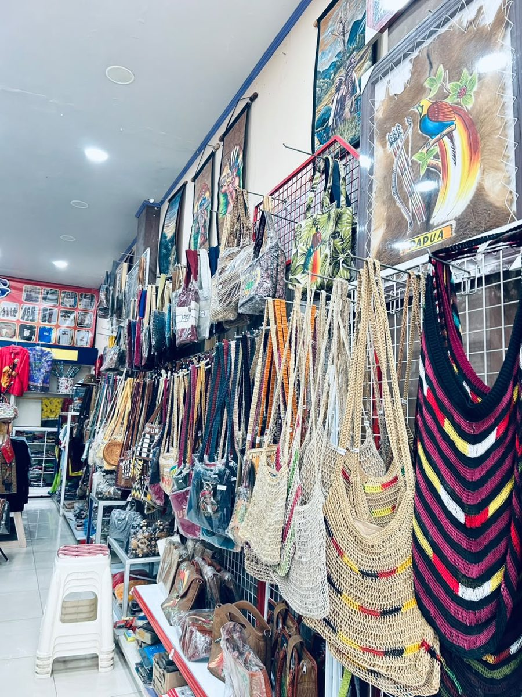
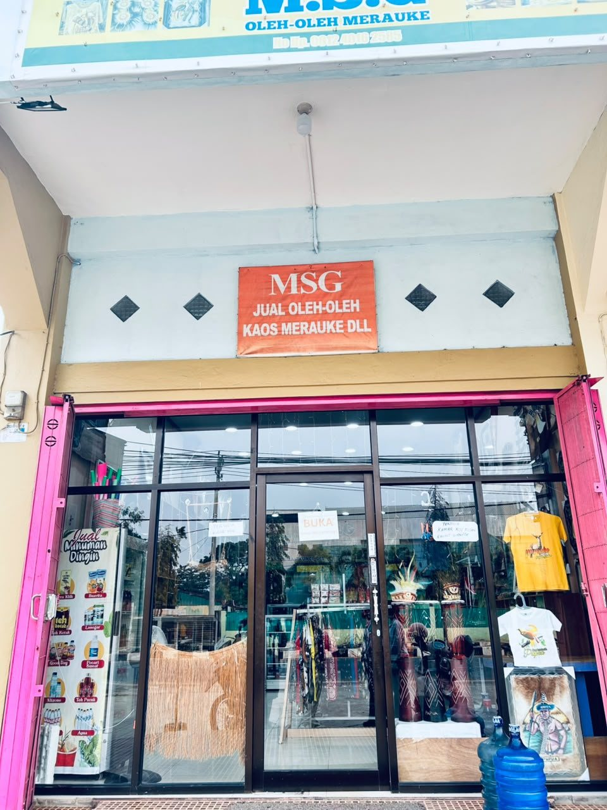
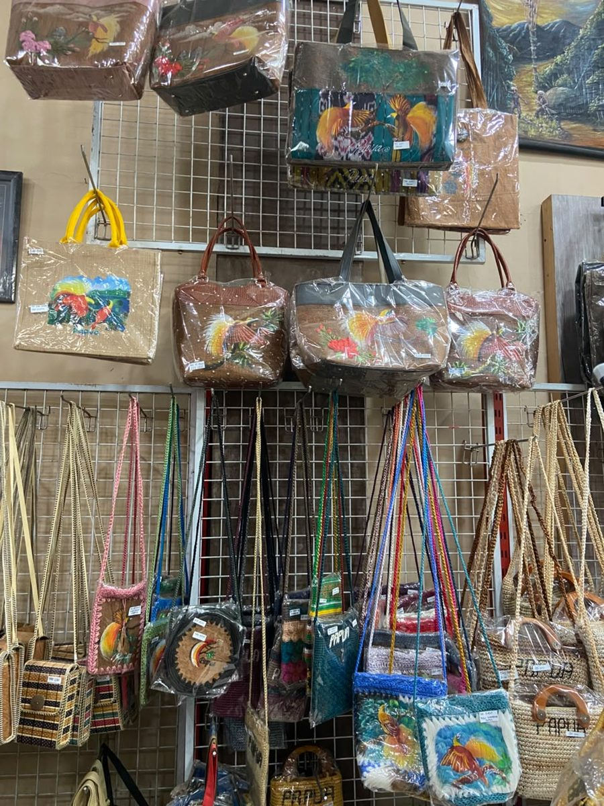
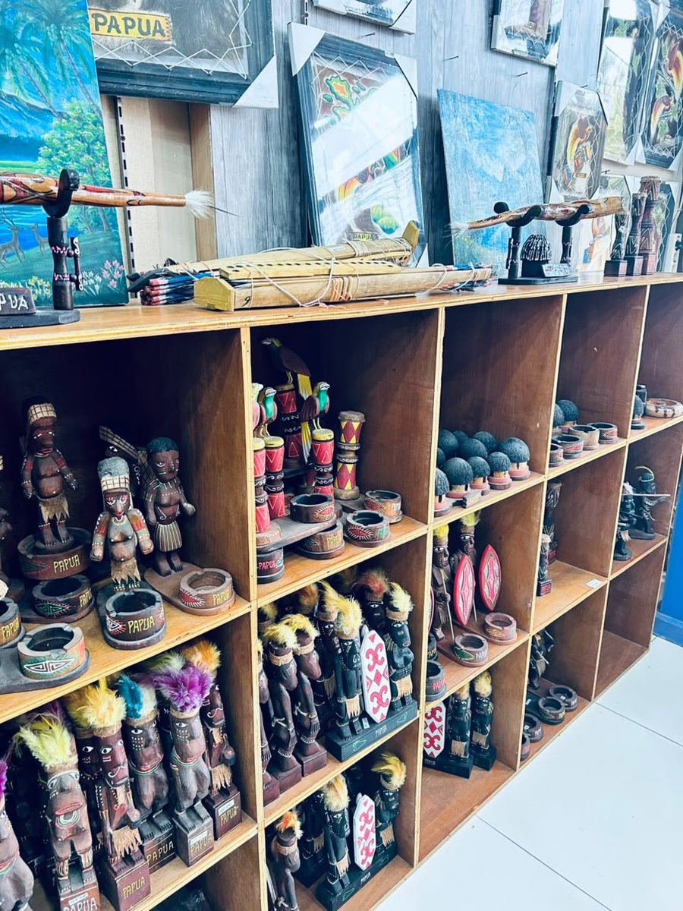
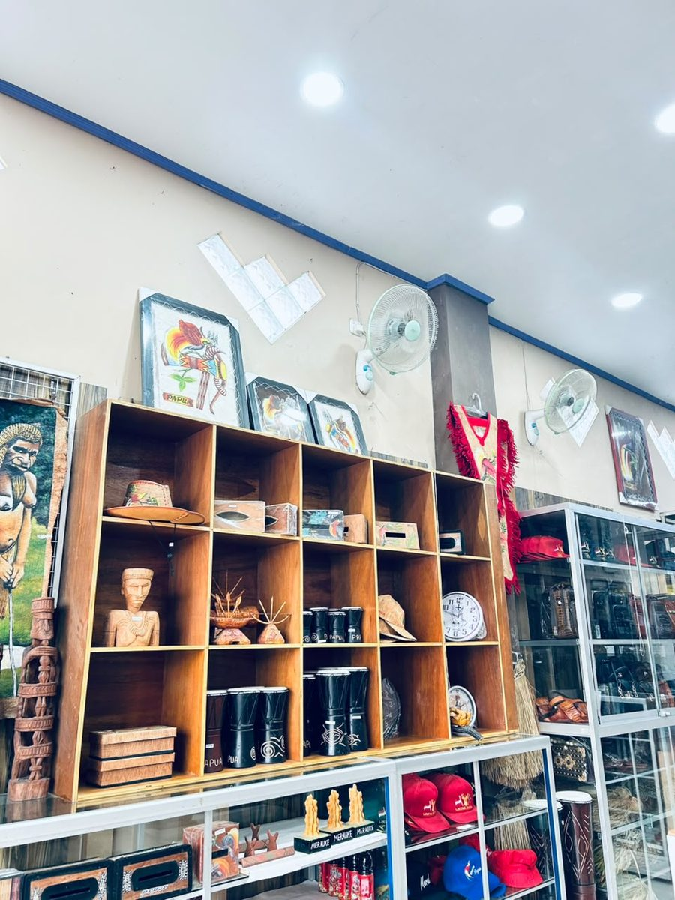
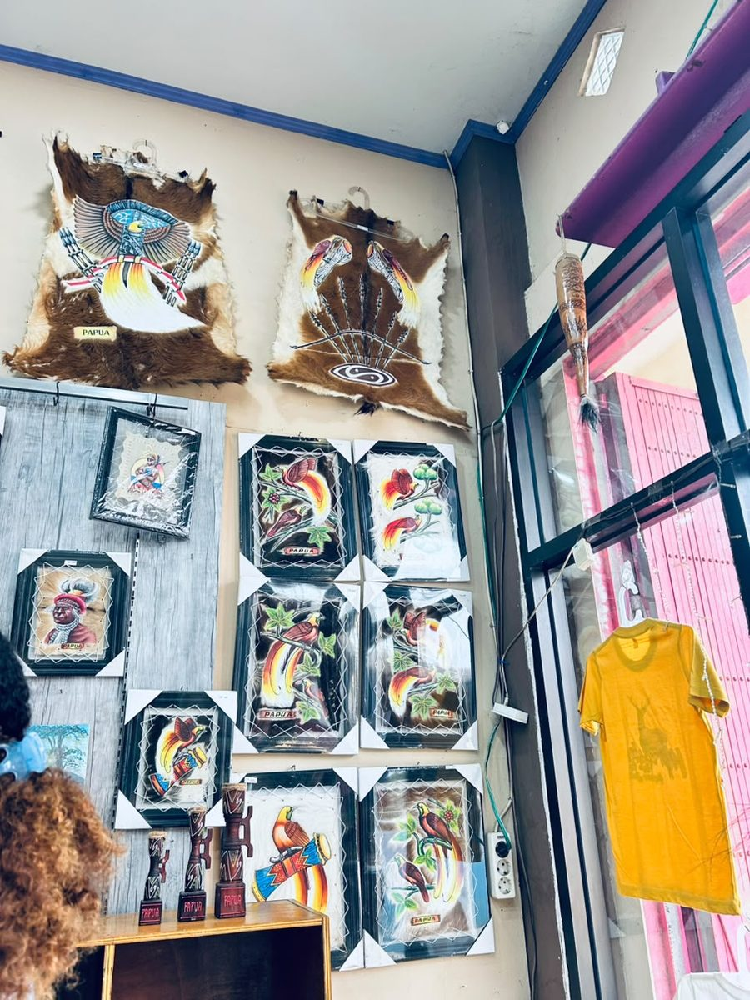
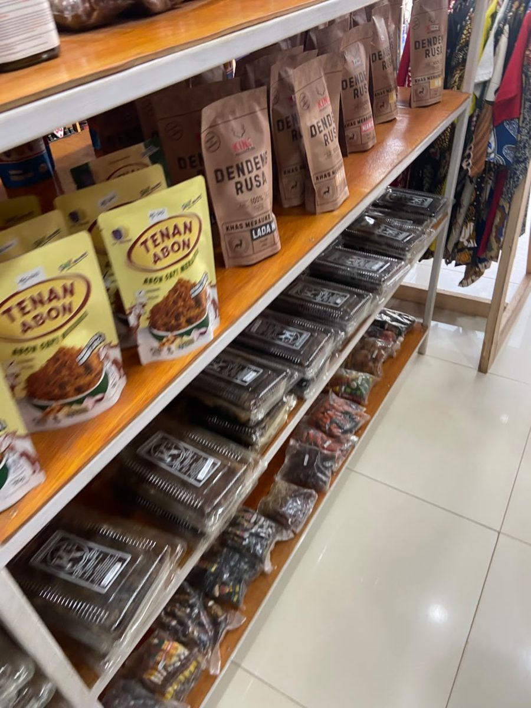
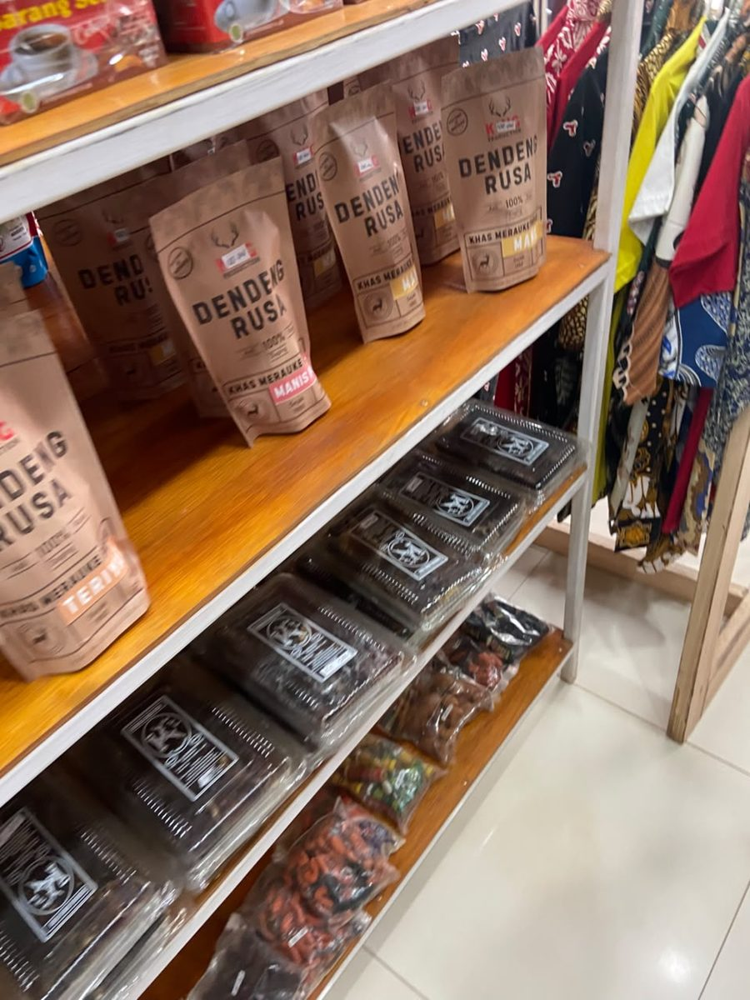
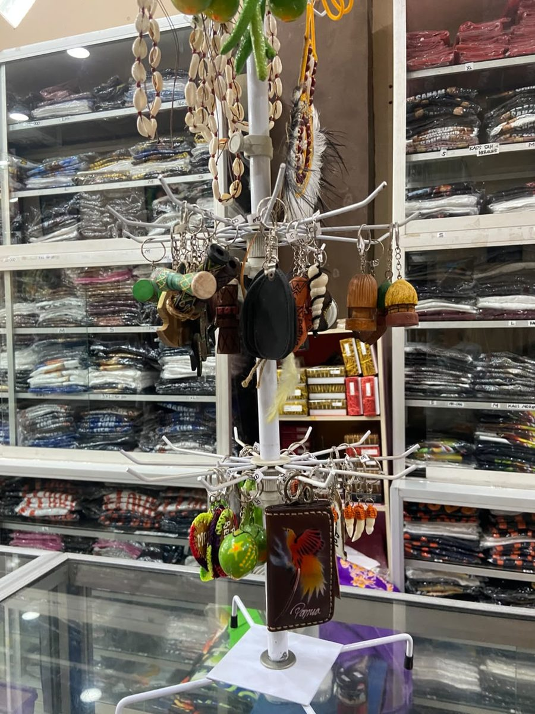
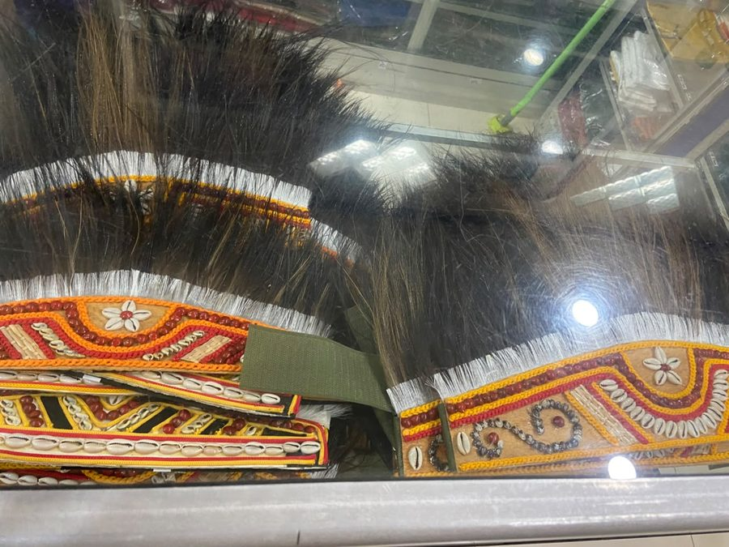

Noken dan tas anyaman
Tas rajut (noken) warna-warni, dari yang polos sampai yang bergaris merah, kuning, dan hitam.
Menjual Kaos Merauke, Noken, Kerajinan kayu, Lukisan, sampai dendeng rusa. MSG sudah berdiri semenjak tahun 2021.
Pemesanan lewat WhatsApp atau Facebook, pembayaran lewat transfer.

MSG dibuka pada 2021. Pembelinya datang dari dua arah: tamu dari luar daerah yang ingin membawa pulang oleh-oleh dari Merauke, dan warga sekitar yang mencari kaos, kain batik, atau kerajinan untuk dipakai sendiri maupun dijadikan hadiah.
Barang yang kami jual cukup beragam, jadi satu kali mampir sudah bisa mengisi daftar oleh-oleh untuk keluarga, teman, dan rekan kerja.
Noken, tas rajut tradisional Papua, membawa nilai-nilai yang kami jadikan pegangan dalam melayani pembeli.
Semua foto diambil langsung di dalam toko. Harga dan ketersediaan bisa ditanyakan lewat WhatsApp di bagian kontak.

Tas rajut (noken) warna-warni, dari yang polos sampai yang bergaris merah, kuning, dan hitam.

Tas tangan dan tas selempang dengan lukisan burung cenderawasih.

Patung kayu khas Papua dan asbak berukir, tertata di rak kayu.

Tifa, topi, kotak tisu ukir, dan pajangan meja untuk dibawa pulang.

Lukisan cenderawasih dan tokoh adat dalam bingkai, siap digantung.

Abon dan aneka camilan khas Merauke dalam kemasan siap bawa.

Dendeng rusa khas Merauke dalam kemasan praktis, tersedia beberapa varian rasa.

Souvenir kecil yang mudah dibawa: gantungan kunci kayu, kalung kerang, dan dompet kunci bergambar cenderawasih.

Hiasan berbulu dengan hiasan manik dan kerang yang dirangkai rapi.
Kaos Merauke dan baju batik tersedia dalam banyak desain dan ukuran, dari S sampai XL. Tanyakan desain yang sedang ada lewat kontak di bawah.
Tidak perlu daftar akun. Cukup chat, lalu kami bantu sampai selesai.
Lihat koleksi di halaman ini atau di Facebook kami, lalu kirim pesan lewat WhatsApp di bagian kontak.
Kami balas dengan harga dan ketersediaan terbaru untuk barang yang kamu pilih.
Setelah sepakat, transfer pembayaran dan kirim buktinya di chat yang sama.
Toko kami berada di Jl. Raya Mandala, Mandala, Kec. Merauke, Kabupaten Merauke, Papua Selatan 99614 (Buka Pukul 08:00 - 21:00)